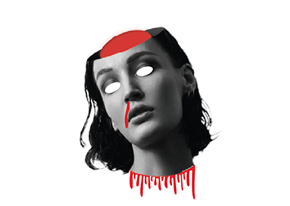
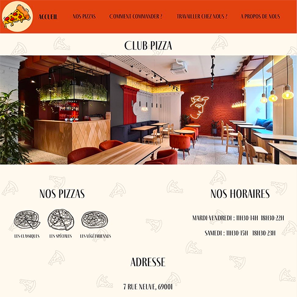

Réalisation d’une planche de surf pour la marque Rossignol lors d’un projet en marketing. Création de
produits dérivés à
distribuer lors d’un événement de lancement.
Design réalisé avec Illustrator et mockup réalisé avec Photoshop.
Création d’une page d’accueil d’un site proposant des recettes de cocktails. Réalisé sur Adobe xd.
Rendu attendu : maquette xd et explication des inspirations.
Tendances utilisées : Oversize / Sombre / Couleurs lumineuses
Réalisation d’un collage surréaliste avec intégration de forme multiple pour un devoir en outils de
production graphique web.
Devoir réalisé sur Photoshop.
Travail sur le détourage, création de masque d’écrétage et jeu d’opacité. Travail sur la bonne
organisation des calques avec
créations de différents dossiers.

Travail sur Photoshop et Illustrator. L’objectif était de réaliser une carte d’Halloween.
La découpe de la tête a été travaillée sur Photoshop.
Les formes ajoutées ont été faites à l’aide d’Illustrator. Le verso de la carte est entièrement réalisé
sur Illustrator.
Réalisation d'une maquette de site vitrine pour un restaurant fictif.
Utilisation d'adobe xd pour le projet. Travail sur le design et le prototypage.

Projet vidéo, sur le thème du temps qui passe.
Réaliser avec le logiciel Premiere Pro.
Conception d'un portfolio print, inspiration minimaliste. Utilisation des couleurs blanche et noire afin de
faire resortir la couleur des projets.
Devoir réalisé avec Indesign.